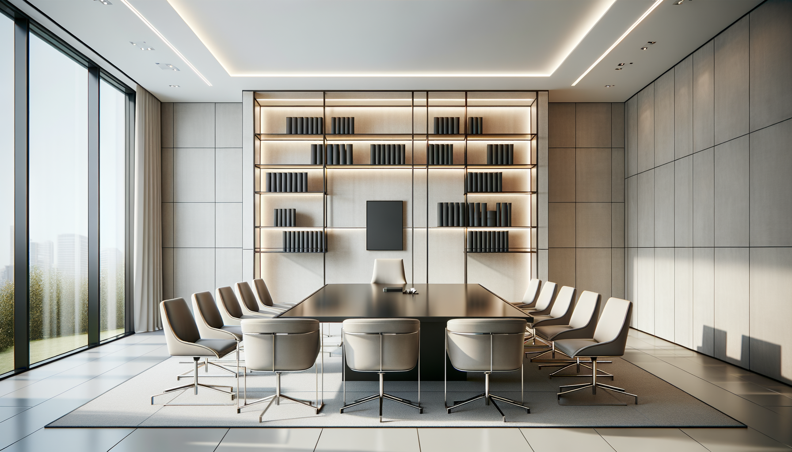

Sobre Kairos Media Studio
Somos un equipo apasionado por la comunicación visual y el marketing digital. Buscamos impulsar marcas con identidad, creatividad y propósito.
En Kairos Media Studio combinamos diseño, estrategia y tecnología para crear experiencias digitales efectivas y memorables.
